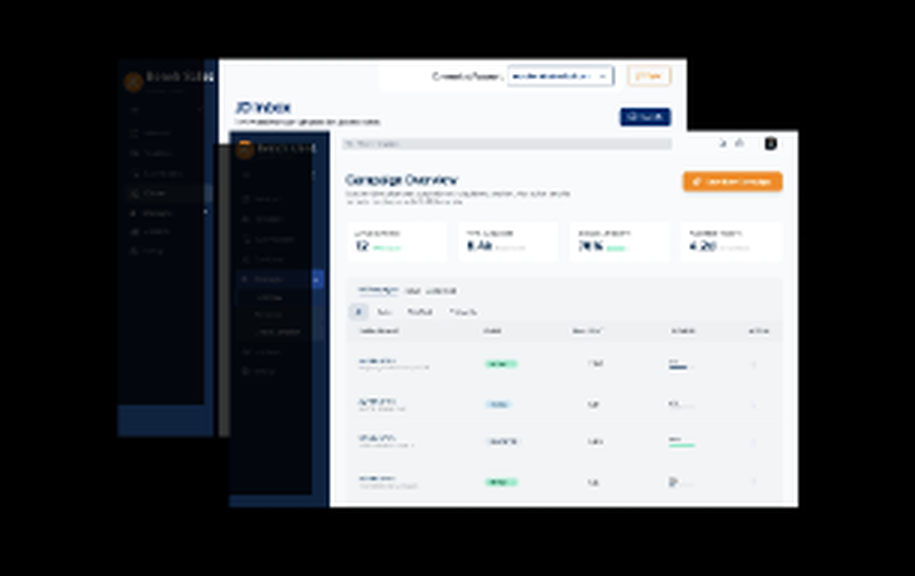
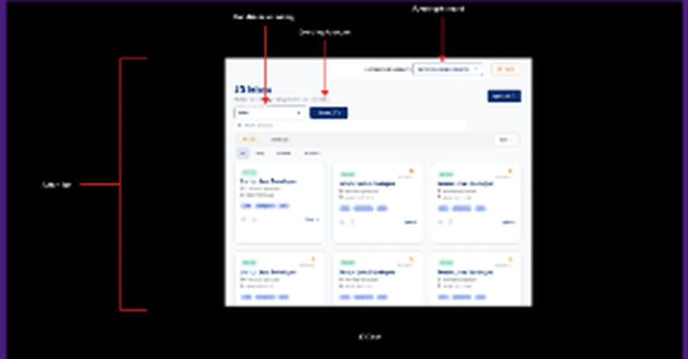
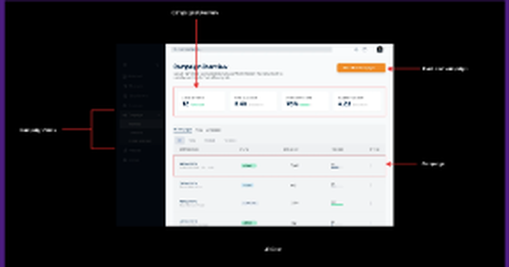

Revolutionizing Bench Sales Management

Challenge
Recruiter chaos: Sprawling spreadsheets & costly consultant bench idle time
Enterprise IT staffing and consulting recruitment agencies relied on chaotic, disconnected spreadsheets to track consultant bench availability, client requisitions, rate cards, and candidate submissions across distributed recruiter pods. Because data was siloed across individual documents, managers had zero real-time visibility into active bench capacity.
Recruiters spent 3 to 4 hours every day manually comparing consultant technical resumes against hundreds of inbound client job descriptions arriving across disjointed email threads. This slow manual matching process caused recruiters to routinely miss strict client submission cutoffs and duplicate candidate submissions to the same end-client.
Every additional week a specialized consultant spent unplaced on the bench represented thousands of dollars in lost agency revenue, putting severe pressure on recruiter margins and driving operational burnout across staffing teams.
Solution
An enterprise B2B SaaS command center with AI resume parsing & pipeline management
Architected Bench Sales, a centralized enterprise SaaS platform designed to automate and streamline the complete consultant placement lifecycle. At its core is an Intelligent JD Inbox that automatically parses inbound requirement emails, extracts required skills, years of experience, and location constraints, and scores them against available bench profiles using AI-driven matching algorithms.
Engineered an interactive consultant bench dashboard featuring real-time availability filters, rate card calculators, and automated resume formatting tools that allow recruiters to generate client-ready candidate profiles with a single click.
Built a unified client submission Kanban pipeline that visualizes candidate interview stages (Submitted → Shortlisted → Interview Scheduled → Offered → Placed) with automated audit logging to prevent duplicate profile submissions across recruiters.
Results
60% faster recruiter turnaround, 40% bench time reduction & zero duplicate submissions
Recruiter turnaround time from receiving a client requisition to submitting a qualified consultant was reduced by 60%, shrinking an average 6-hour manual search down to under 45 minutes.
Across pilot staffing agencies managing 500+ active enterprise consultants, average consultant bench idle time fell by 40%, while automated submission tracking eliminated 100% of duplicate submission conflicts and reduced profile formatting errors by 35%.
How Bench sales Reduced Bench Time by 40% through Intelligent Automation
Overview
Bench Sales is an enterprise staffing platform designed to help recruiters manage consultant availability, client requirements, job submissions, and placement workflows from a centralized dashboard.
The goal was to simplify complex recruitment operations by reducing manual effort, improving consultant visibility, and enabling recruiters to make faster, data-driven placement decisions through an intuitive and scalable automated workflow.
The Challenge
Traditional bench sales are plagued by manual effort, missed job description (JD) and fragmented communication. Recruiters spent hours every day switching across systems instead of placing talent:
Information Overload
Sifting through hundreds of vendor emails and disparate portals daily to locate relevant client job descriptions.
Low Visibility & Tracking
Lack of a centralized history for candidate submissions, causing duplicate pitches, missed feedback, and lost placements.
The Solution
An All-in-One Bench Ecosystem
Our platform was engineered to transform the bench sales lifecycle from a manual grind into a high-velocity, automated engine.
The platform consolidates recruiter operations into four core workflows: consultant profile tracking, automated requirement parsing, pipeline stages, and intelligent candidate matching.
Intelligent JD Inbox & Matching
An AI-powered JD inbox that automatically aggregates and parses incoming job descriptions, extracts critical requirements, and matches them against available bench consultants using smart filters and instant compatibility scoring.

Automated Campaign Management
The Campaign Overview and Email Marketing modules allow sales teams to run targeted outreach at scale with automated sequence follow-ups, open tracking, and response analytics.

Results & Impact
The redesigned Bench Sales platform established a scalable foundation for staffing operations by bringing consultant management, requirement tracking, and submission workflows into a single, cohesive experience.
Reduced Bench Time through Intelligent Automation
Core Recruiter Workflows Redesigned